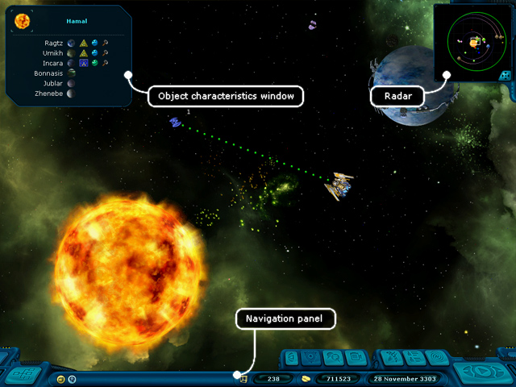

Ranger manual > Space screen
|
Ranger manual > Space screen
|
| Space screen When you are in the space, you see in front of you a part of the star system. There you may different space objects: ships, planet, space stations, items, etc. You can review the information about any object in the pop up window, which appears if you hover the cursor over the object. |

|
In the right upper corner of the screen there is a radar
panel, and over the main navigation panel
the following buttons appear:
• Scanning (I) - study the interior of another ship. • Talk (T) - communicate with another ship. • Weapon panel (W) - show/hide weapon. • Flight log (H) - review your flights. Being in space, the player can give the following orders: • Flight - fly to the indicated point. • Land - make a landing on a planet or a space station. • Chase - follow the target at a certain distance or fight in the automatic mode. • Jump to star - make a hyper jump to another star system. • Picking up items - pick up an item aboard. • Shoot - shoot your weapons at spaceships and asteroids. For a quick scrolling through the space screen: • Move the mouse cursor to the edge of the screen, in the direction of which you wish to scroll. For a precise scrolling of the space screen: 1. Press and hold down the right mouse button, the cursor should take the 'scroller' shape 2. Keep holding down the mouse button, and move the cursor in the direction you wish to do the scrolling. To focus the camera on the nearest dominator: • Press X. To focus the camera on the farthest dominator: • Press Z. To return the camera to the player's ship: • Press C or 'Focus ship' button |